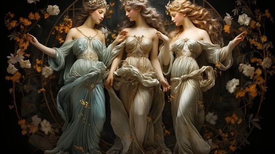
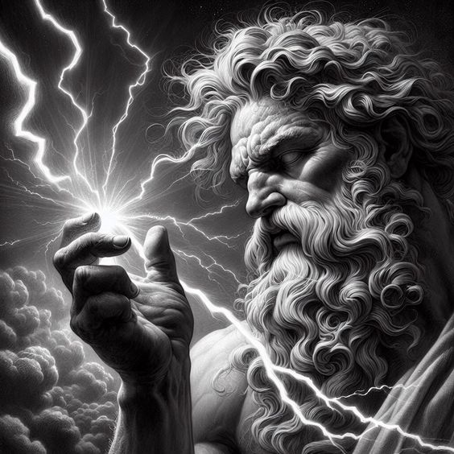
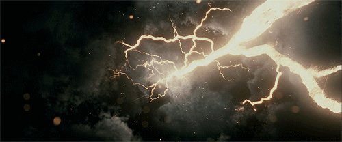
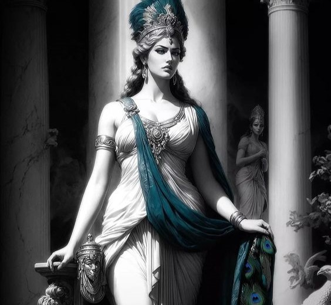
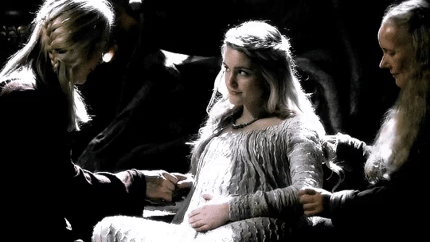
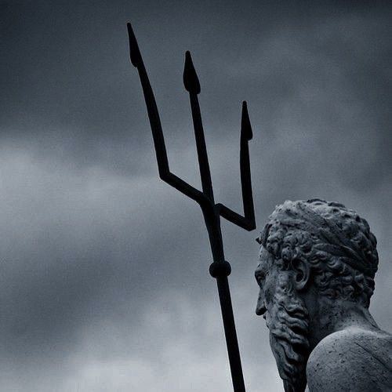

DEUSES DO OLIMPO

ZEUS

Zeus é o rei dos deuses e governante do Monte Olimpo, o panteão celestial da mitologia grega. É associado ao trovão e ao relâmpago, sendo frequentemente retratado segurando um raio em suas mãos. Essa associação com o trovão reflete seu papel como deus do céu e do clima. O deus soberano é frequentemente retratado como um ser poderoso e imponente, com longos cabelos e barba. Também é conhecido por seu papel como senhor dos mortais, sendo protetor de reis e heróis. Em muitas ocasiões interveio nos assuntos humanos. Sua imagem está ligada a ideias de justiça, ordem e liderança. Na mitologia romana, Zeus é conhecido como Júpiter.

PODERES DE ZEUS
De acordo com a mitologia grega, Zeus é responsável por preservar a ordem e a justiça, já que também possui poderes relacionados às forças da natureza como os raios, relâmpago, trovão e chuva e, por isso, é considerado o deus do céu. Zeus tinha o poder dos fenômenos atmosféricos e fazia relâmpagos e trovões e com sua mão direita lançava a chuva, podia usar sua força como destruidora, mas também mandava chuvas para as plantações. Zeus casou-se três vezes, sua primeira esposa foi Métis a deusa da prudência e com ela teve sua filha Atena.
HERA

Hera era uma importante deusa da mitologia grega, considerada a deusa das mulheres, dos casamentos, da família e dos nascimentos. Era a protetora de todas as mulheres grávidas e vista como rainha dos deuses por ser casada com Zeus, o deus mais poderoso do panteão grego. Retratada como ciumenta e agressiva contra qualquer relação extra-conjugal, odiava e perseguia as amantes de Zeus, e os filhos bastardos gerados desses relacionamentos. Tentou, dentre alguns exemplos, matar Héracles ainda no berço. A única exceção era Hermes e sua mãe Maia, que a deusa até admirava pela astúcia e beleza.
PODERES DE HERA
o seu principal atributo consistia em ser a deusa das mulheres, do casamento, da família e dos nascimentos. Era a protetora de todas as mulheres que estavam grávidas. Ela era tida como a deusa responsável por proteger as mulheres grávidas e em trabalho de parto e considerada a rainha dos deuses. Era chamada pelos romanos de Juno.

POSEIDON

Poseidon foi o deus grego dos mares e dos rios, considerado o deus patrono dos marinheiros. Foi implacável com seus desafetos. Os gregos tinham Poseidon como o deus dos mares e dos rios. ambém era conhecido como o deus dos terremotos. Os símbolos associados a Posídon com mais frequência eram o tridente e o golfinho. A origem de Posídon é cretense, como atesta seu papel no mito do Minotauro. Na civilização minoica era o deus supremo, senhor do raio, atributo de Zeus no panteão grego, daí o acordo da divisão de poderes entre eles, cabendo o mar ao antigo rei dos deuses minoicos.

PODERES DE POSEIDON
Deus do mar e dos lagos, Poseidon provocava as tormentas marítimas e comandava as ondas, além de poder abalar os rochedos costeiros com seu tridente.Também fazia as fontes aparecerem. No entanto, os rios não estavam sujeitos a ele. Os gregos o consideravam o deus dos mares e dos rios e responsável por terremotos, enchentes e tempestades. Era o patrono dos marinheiros e dos cavalos e o criador desses animais na mitologia.